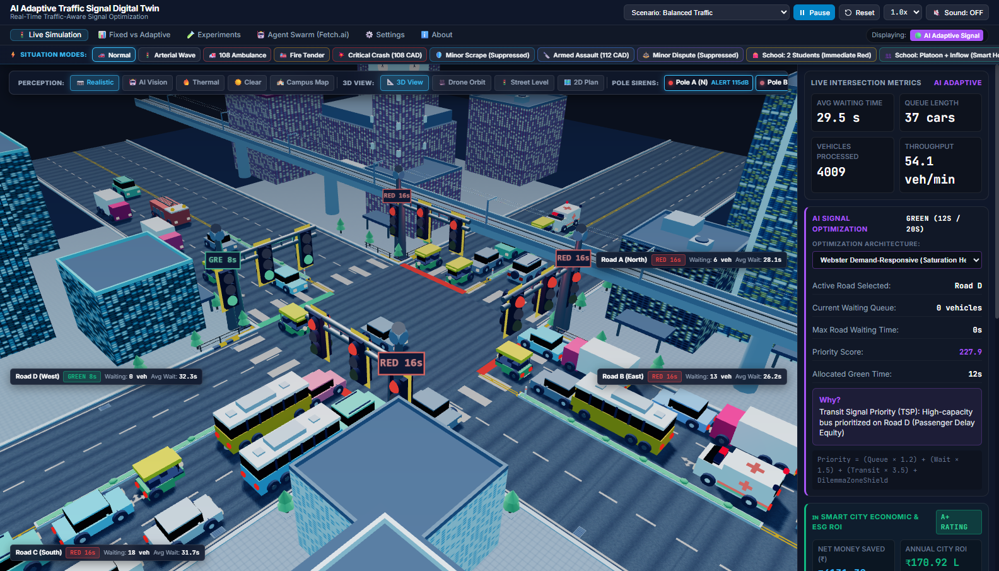
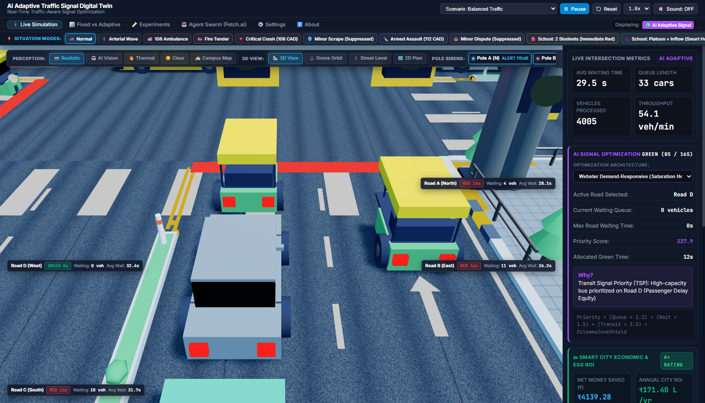
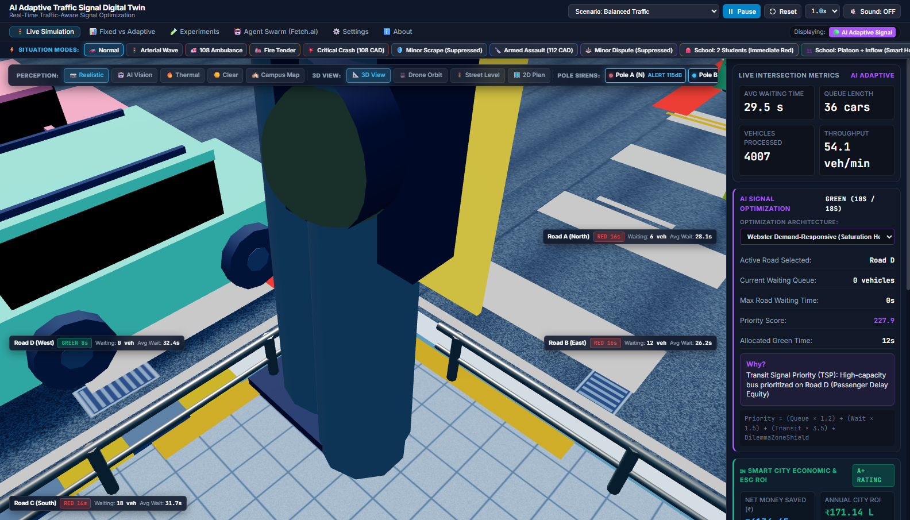

Conventional urban traffic systems rely on static pre-timed controllers or isolated loop sensors that cannot adapt to real-time spatial surges, causing severe compounding gridlock:
-
42.8% Unproductive Idle Waste: Commuters waste hundreds of collective hours idling at empty cross-street green lights.
-
Critical "Golden Hour" Delay: 108 Ambulances and Fire Tenders lose crucial minutes stuck in queued traffic lanes without priority corridors.
-
Lack of Network Coordination: Isolated signals cause cascading congestion wave propagation to adjacent intersections.
-
Environmental Deterioration: Stop-and-go acceleration cycles exponentially increase toxic emissions and fuel burn.
An end-to-end cyber-physical architecture connecting edge telemetry, autonomous swarm intelligence, and spatial visualization:
Decentralized Multi-Agent Coordination (Fetch.ai):
-
Arterial Coordinator Agent: Synthesizes downstream queue capacity to maintain dynamic green waves along primary corridors.
-
Intersection Controller Agent: Evaluates Webster saturation ratios and enforces starvation-prevention timers for minor roads.
-
Emergency Corridor Agent: Broadcasts cryptographic preemption requests to reserve green paths across consecutive nodes.



-
Dilemma Zone Protection: Tracks inbound platoon deceleration thresholds; if vehicles cannot safely stop before red without severe braking, amber phase extends dynamically by up to 2.5s.
-
Transit Signal Priority (TSP): Grants priority green extensions for high-capacity public buses, maximizing overall passenger throughput over individual vehicle counts.
When an authorized emergency responder (108 Ambulance, Fire Tender) is detected by CAD dispatch or acoustic sirens:
-
Autonomous Corridor Lock: Signal switches conflicting directions through standard yellow clearance, locking the emergency corridor to green.
-
Zero Intersection Stagnation: Clearance times for ambulances drop from 98s in heavy congestion to 0s queue delay.
-
Seamless Recovery: Once the emergency vehicle clears the conflict box, the system gracefully recovers standard phase rotation without starvation.
| Performance Metric | Fixed-Time Baseline | TrafficFlow-AI | Improvement |
|---|---|---|---|
| Average Queue Wait Time | 31.2 sec | 18.6 sec | 40.4% Faster |
| Intersection Throughput | 42.0 veh/min | 58.4 veh/min | +39.0% Volume |
| Ambulance Delay (Peak) | 98.0 sec | 0.0 sec | Zero Delay |
| Peak Queue Accumulation | 19 vehicles | 7 vehicles | 63.1% Lower |
Quantifiable return on investment measured through active fuel reduction, time reclamation, and emissions mitigation:
-
₹171.4 Lakhs Projected Annual Savings: Based on 0.8 L/hr idling fuel burn savings across peak commuter volumes.
-
142 Metric Tons Annual CO₂ Reduction: Drastic reduction in stop-start idling prevents heavy greenhouse gas accumulation at key junctions.
📱 Interactive Live Demo
Scan with your phone to control the 3D Digital Twin, inspect live queues, and trigger 108 Emergency Corridors in real-time!